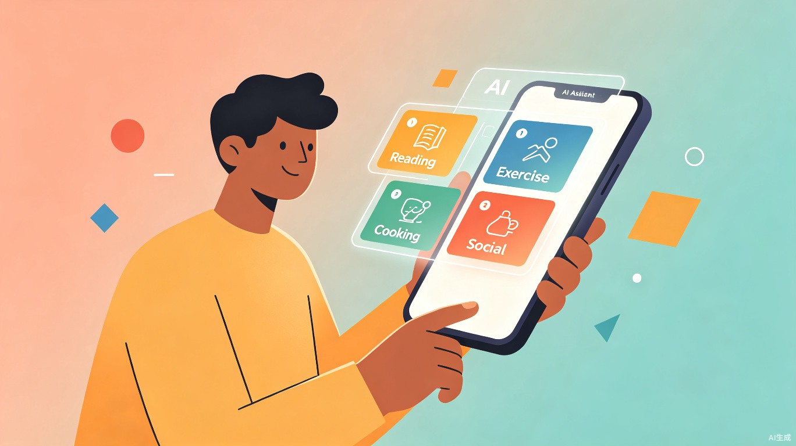
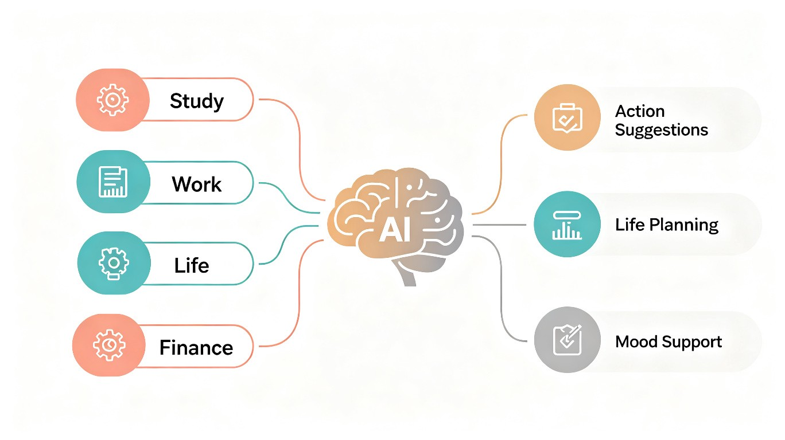
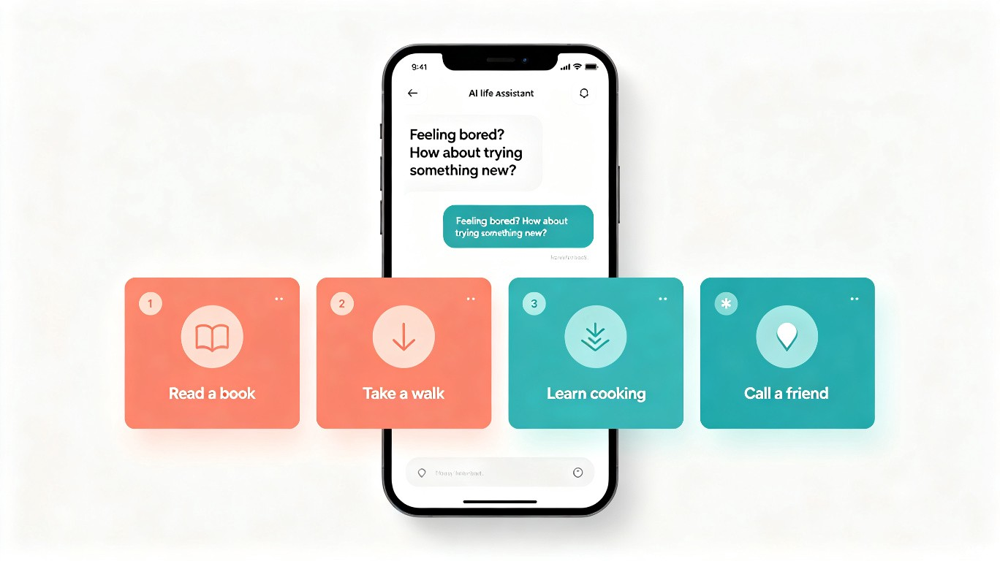

AI 驱动的青年生活行动助手 — 当你不知道该做什么的时候，它恰好知道。

打开手机屏幕使用时间统计，你会看到一个并不陌生的数字：日均 6 到 8 小时。其中有多少时间是我们主动选择的，又有多少只是被算法喂养后的惯性滑动？当代青年群体面临一个悖论：信息越是爆炸，选择越是困难。空闲时间不再意味着自由，而是意味着新一轮的刷视频、打游戏、或者对着天花板发呆。
这个看似简单的问句，恰恰指向了一个被长期忽视的需求：青年群体需要的不是另一个内容推荐算法，而是一个理解他们当前状态、并能给出行动建议的智能伙伴。它不是替你做决定，而是在你犹豫不决的时候，递上一张刚好合适的牌。
灵犀 LifeSpark 是一款 AI 驱动的青年生活行动助手。它通过分析用户近期的学习、工作、生活、经济状况，在合适的时机主动发起对话，提供个性化的行动建议与生活规划。它的定位不是效率工具，不是日程管理，而是介于"朋友"和"导师"之间的第三种角色：一个在你迷茫时轻声提醒的智能伙伴。
不是等你打开 App 才工作。灵犀通过分析你的日程、消费、步数等多维度数据，判断你当前可能的状态，在合适时机主动发起关怀。
它不会给你推荐月薪三千的人去参加高端品酒会。建议始终基于你的实际经济水平、空闲时段、地理位置和个人兴趣来生成。
不是泛泛而谈的鸡汤。每条建议都是具体可执行的：去哪里、花多少、需要什么准备、预计多长时间，一步到位。
长期跟踪你的行动轨迹，发现你的兴趣偏好变化，帮助你逐步建立更有节奏感和目标感的生活方式。
灵犀的核心交互是一段自然语言对话。当系统检测到你可能有空闲且无所事事时，它会以温和的方式发起对话。你不需要填写冗长的问卷，也不需要选择几十个兴趣标签，一切从一句自然的问候开始。
注意这些建议的特点：演出推荐考虑了你的消费水平，散步考虑了你的地理位置，读书推荐延续了之前的阅读进度，做饭则匹配了你当下的时间窗口。每一条都"刚好合适"，而不是"随便推荐"。
灵犀的技术架构围绕四个数据维度展开——学习、工作、生活、经济。通过多源数据融合和 AI 推理引擎，将原始数据转化为有温度的行动建议。

| 维度 | 数据来源 | 分析目标 |
|---|---|---|
| 学习 | 课程平台、阅读记录、笔记工具 | 当前学习进度、知识兴趣倾向 |
| 工作 | 日历、任务管理、邮件活跃度 | 工作节奏、压力水平、空闲时段 |
| 生活 | 运动数据、社交频率、睡眠质量 | 生活状态、社交健康、精力水平 |
| 经济 | 消费记录（需授权）、收入趋势 | 可支配预算、消费习惯、储蓄状况 |
核心推理引擎基于大语言模型（LLM）构建，融合检索增强生成（RAG）技术。用户的个人数据向量存储在本地加密数据库中，推理时仅提取与当前场景相关的上下文片段，不向任何第三方泄露原始数据。引擎的决策流程如下：
flowchart TD
A[多源数据采集] --> B[特征提取与用户画像]
B --> C{场景判断引擎}
C -->|空闲/无聊| D[行动建议生成]
C -->|压力较大| E[放松建议生成]
C -->|经济紧张| F[低成本活动推荐]
C -->|学习投入高| G[知识拓展建议]
D --> H[个性化排序与过滤]
E --> H
F --> H
G --> H
H --> I[自然语言对话输出]
系统持续但轻量地监测用户的作息规律、设备使用模式、日程密度等信号。当检测到"连续两小时无明确日程 + 近期社交频率下降 + 短视频使用时长上升"的组合特征时，判定用户可能正处于无聊状态，触发主动关怀机制。
建议生成引擎综合考虑以下因素：
除了即时建议，灵犀还支持中长期规划。用户可以表达一个模糊的愿望，比如"我想学点新东西但不知道学什么"，灵犀会结合用户的教育背景、职业方向和兴趣倾向，生成一份循序渐进的学习路径建议。
每次建议发出后，系统会跟踪用户的反馈——是采纳了、忽略了还是明确拒绝了。这些反馈数据持续优化后续建议的准确性。灵犀会学习你的偏好：你更喜欢室内还是户外？社交型还是独处型？高消费还是精打细算？
当检测到用户情绪持续低落时，灵犀会切换到情绪支持模式。此时不再推送活动建议，而是提供温和的陪伴、简单的呼吸引导练习、或者推荐专业的心理支持资源。这一模块的设计原则是：不替代专业心理咨询，但可以在专业帮助介入之前提供第一时间的温暖响应。
灵犀的界面设计遵循"轻量、温暖、不干扰"的原则。没有繁杂的仪表盘，没有信息过载的数据面板，核心体验就是一段干净的对话流。

主界面就是一个聊天窗口，所有交互都以自然语言完成，降低使用门槛。
珊瑚色与青色的组合传递活力而不刺眼，背景采用暖白色调营造舒适感。
行动建议以可视化卡片形式呈现，包含预估时间、费用、距离等关键信息。
| 层次 | 技术选型 | 理由 |
|---|---|---|
| 前端 | React Native / Flutter | 跨平台支持，快速迭代 |
| 后端 | Python FastAPI + Node.js | AI 推理与业务逻辑分离部署 |
| AI 引擎 | LLM（GPT-4o / Claude）+ RAG | 自然语言理解与个性化生成 |
| 数据存储 | PostgreSQL + 本地加密向量库 | 结构化数据 + 隐私保护 |
| 数据采集 | OAuth 授权 + 本地 SDK | 用户可控的数据接入机制 |
| 部署 | Docker + Kubernetes | 弹性扩展，按需扩缩 |
搭建基础对话框架，接入日历和运动数据，实现最简单的"空闲检测 + 行动推荐"闭环。
完善多维度数据接入，优化建议生成算法，邀请 50 名种子用户进行内测，收集反馈迭代。
开放公测，引入社区反馈机制，上线情绪支持模块，优化长短期规划功能。
探索与本地商家的合作模式（推荐线下活动时带来流量），构建可持续的商业模式。
处理个人敏感数据的产品，隐私保护不是附加功能，而是产品的生命线。灵犀在架构层面内置了以下隐私保护机制：
所有个人数据优先存储在用户设备本地，仅在需要 AI 推理时通过加密通道传输脱敏后的特征向量，原始数据不离开设备。
只采集与分析目标直接相关的数据字段，拒绝"先收集再说"的数据囤积模式。用户可以随时查看、暂停或删除任何维度的数据授权。
每次建议生成时，用户可以点击查看"为什么推荐这个"，系统会展示影响该建议的关键数据因素，完全可追溯。
市面上并不缺少"推荐"类产品，但灵犀在定位上与它们有本质区别：
| 维度 | 短视频平台 | 日程管理工具 | 通用 AI 助手 | 灵犀 LifeSpark |
|---|---|---|---|---|
| 触发方式 | 被动等待用户打开 | 被动等待用户记录 | 被动等待用户提问 | 主动感知并发起 |
| 推荐逻辑 | 最大化停留时长 | 按时间顺序排列 | 通用知识问答 | 结合上下文的行动建议 |
| 数据理解 | 仅行为偏好 | 仅时间信息 | 无个人上下文 | 多维度生活状态 |
| 目标导向 | 广告收入 | 效率提升 | 通用任务 | 用户真实生活质量 |
灵犀 LifeSpark 的长期目标不是成为下一个"爆款 App"，而是重新定义 AI 与青年生活的关系。我们希望 AI 不再只是帮人写代码、写文案的生产力工具，也能成为一个理解你、关心你、在你无聊时递上一杯茶的伙伴。
灵犀相信，每一代人都有属于自己的迷茫时刻。而好的技术，应该是在你站在十字路口不知道往哪走的时候，帮你看到那些你可能忽略的方向——然后，由你自己迈出那一步。